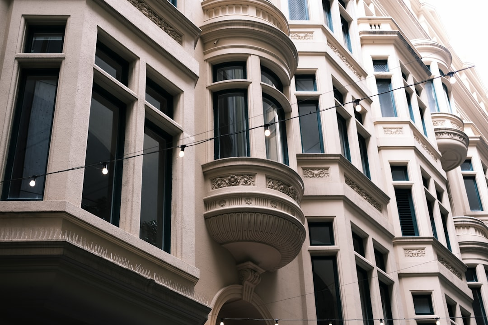

For homeowners comparing home renovations sydney options, the useful first question is whether the job is a room upgrade, a structural rework, an approval problem or a whole home rebuild.
Home Renovations Sydney Explained
Renovation Sydney frames early planning around the job type, the property type and the likely constraints before a builder conversation begins. That approach suits Sydney work because a kitchen with no layout change, a bathroom that needs waterproofing, a ground floor extension and a heritage terrace renovation each need different quote inputs.
The published guide directs homeowners to clarify whether the path is whole home, kitchen, bathroom, extension, granny flat, heritage or terrace work. The practical decision is whether the existing layout still works, whether walls or services may move and whether approval details need attention before pricing.
- Same footprint: ask whether cabinetry, fixtures, tiling, appliances or finishes can solve the problem without moving walls or services.
- Changed layout: ask which structural, plumbing, electrical or waterproofing items need to be priced in writing.
- Changed envelope: ask whether the brief is really an extension, first floor addition or granny flat question rather than a room upgrade.
Sydney Homes Need Different Quote Inputs
Renovation Sydney uses three clear examples to show why property context changes the brief: a Paddington terrace under a conservation overlay, a Castle Hill second storey addition and a Cronulla beachside kitchen renovation. A suburb name alone is not enough. The constraint attached to the property is what shapes the next conversation.
Before requesting quotes, prepare the suburb or postcode, project type, rough scope, what feels broken or outdated, likely structural change, possible approvals and the rough budget. Those details give the contractor a firmer basis for the site visit and make quote comparisons less dependent on guesswork.
The same discipline applies to apartments, beachside units, harbourside homes, project homes and heritage terraces, all property types named in the published material. Readers comparing another independent overview of Sydney renovation planning questions will see the same pattern: property type and constraint should lead the enquiry.
Cost Signals To Discuss Before Finishes
The cost guidance is broad because scope drives price. A cosmetic refresh of a few rooms can sit in the tens of thousands. A full whole home renovation with structural change in Sydney commonly runs from around $150,000 into the several hundred thousands. Treat those figures as planning signals, not a substitute for a written quote.
Kitchen pricing changes with the level of work. A budget refresh may mean new doors, benchtop and splashback with no layout change. A fuller kitchen can involve new cabinetry, stone look benchtops, appliances and services updates. Premium custom joinery, a butler's pantry and integrated appliances sit higher again. For home renovations sydney planning, name the tier being priced before comparing builders.
Bathroom costs are shaped by size, tiling extent, fixture quality and whether the layout moves. Waterproofing to Australian Standard AS 3740 is identified as a required part of a compliant bathroom, so waterproofing scope and any layout movement should be discussed before selections are treated as final.
What A Written Quote Should Clarify
The published guide says builder credentials, insurance details and written scope should be clear before work starts. It also says the quoting contractor should set out scope, price, programme and exclusions in writing. Those items are the comparison points when two quotes appear similar but assume different work.
- Which rooms, structures, services and finishes are included.
- Which approval, council, waterproofing or structural questions are excluded or provisional.
- Whether the programme depends on access, materials, inspections or staged decisions.
- Which fixtures, cabinetry, benchtops, tiling and appliances are allowances rather than fixed selections.
ASIC Moneysmart publishes consumer guidance on renovating. Housing Industry Association and Master Builders Australia are also relevant industry references for broader building context. General guidance can orient the owner, but the project position still needs to appear in the contract documents.
Who This Applies To
This guide is for Sydney homeowners who are early enough to shape the brief before tendering. It suits owners weighing a whole home renovation, kitchen renovation, bathroom renovation, apartment renovation, house extension, heritage or terrace project, granny flat question or residential renovation with custom joinery.
It is less useful once final drawings, selected fixtures, confirmed approvals and a fixed price contract are already in place. At that point, the better exercise is checking allowances, exclusions and builder communications against the agreed documents.
For a homeowner still deciding between home renovations sydney pathways, the next action is a one page brief: property type, suburb, rooms affected, outcome wanted, known constraints, budget range and questions requiring a builder's eye.
- Define the brief. Write down the suburb, property type, rooms affected, desired outcome, rough budget and known constraints before asking for a site visit.
- Separate scope from finishes. Decide first whether the layout, structure or services are changing, then discuss cabinetry, fixtures, tiling and appliances.
- Ask about approvals early. Raise council pathways, heritage limits, structural work and waterproofing before treating any estimate as reliable.
- Compare written quotes. Check scope, price, programme, exclusions, credentials and insurance details side by side before choosing a contractor.
| Situation | Likely focus | Question to ask before quoting |
|---|---|---|
| Kitchen or bathroom stays in place | Finishes, fixtures, cabinetry, waterproofing and services condition | Can the current layout solve the problem without moving services? |
| Whole home layout no longer works | Room flow, structure, services, approvals and staged delivery | Which structural or approval issues must be clarified before pricing? |
| Terrace, apartment or constrained site | Access, property type limits, heritage or shared building considerations | What site constraints could change scope, programme or exclusions? |
This guide covers early Sydney renovation planning, scope decisions, quote inputs, costs, approvals and contract questions for homeowners.